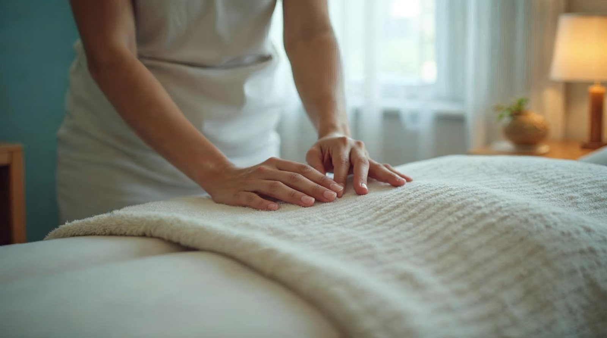

이종호 한의사 감수좋은꿈참사랑한의원 대표원장 (한의사 면허번호 19769)발행 2026-11-22 · 수정 2026-11-24
이 글의 차례
장거리 운전 뒤 허리와 다리가 뻐근하다면 두 시간에 한 번은 차에서 내려 걷고, 운전 뒤에는 허리와 종아리를 천천히 풀어 주는 것부터 시작합니다. 대부분은 같은 자세가 오래 이어진 탓이지만, 다리로 뻗치는 저림이나 힘 빠짐이 있다면 생활 요령보다 확인이 먼저입니다.
왜 이런 불편이 생길 수 있나요
- 운전석에 오래 앉아 있으면 허리와 엉덩이 근육이 같은 길이로 굳고 허리 아래쪽에 부담이 쌓일 수 있습니다.
- 페달을 밟는 다리만 계속 긴장하면 한쪽 엉덩이와 다리가 더 뻐근하게 느껴지기도 합니다.
- 오래 움직이지 않으면 다리의 순환이 더뎌 무겁고 붓는 느낌이 생길 수 있습니다.
- 한의학에서는 이런 뻐근함을 근육의 긴장, 순환, 피로가 함께 쌓인 모습으로 봅니다.
먼저 이렇게 여쭙니다
- 운전 시간과 중간에 쉬는 횟수는 어땠나요?
- 뻐근함이 허리에만 있나요, 엉덩이나 다리까지 내려가나요?
- 저림이나 힘이 빠지는 느낌이 있나요?
- 평소에도 오래 앉아 있는 일이 많나요?
- 예전에 허리를 다치거나 디스크 진단을 받은 적이 있나요?
일상에서 먼저 해 볼 수 있는 것
- 두 시간에 한 번은 차를 세우고 5분 이상 걷기
- 등받이에 허리를 붙이고 작은 쿠션으로 허리를 받치기
- 운전 중 신호를 기다릴 때 발목을 돌리고 어깨를 으쓱해 풀기
- 운전 뒤 누워서 무릎을 가슴 쪽으로 천천히 당겨 허리 풀기
- 따뜻한 물로 허리와 엉덩이를 데우고 종아리를 가볍게 주물러 주기

한의원에서 함께 살필 수 있는 경우
- 운전 뒤마다 허리와 엉덩이가 뻣뻣해지는 경우 앉는 자세와 근육의 긴장 상태를 함께 살핍니다.
- 한쪽 다리만 무겁고 뻐근한 경우 몸의 쏠림과 운전 자세를 함께 봅니다.
- 피로가 쌓인 날 통증이 더 오르내리는 경우 순환과 긴장, 수면 상태를 함께 살핍니다.
좋은꿈참사랑한의원에서는 먼저 운전 습관과 불편한 동작을 듣고 주변까지 넓게 살핀 뒤, 필요하다고 판단될 때 초음파로 확인하고 추나·침·약침 등 상태에 맞는 방법을 정합니다. 운전 중 쉬는 방법도 함께 정하고, 다음 진료에서 달라진 점을 이어서 확인합니다.
이렇게 기록해 오시면 상담이 쉬워집니다
- 운전한 시간과 쉰 횟수
- 뻐근함이 내려간 위치(허리, 엉덩이, 허벅지, 종아리)
- 저림이 있었다면 어느 쪽, 어느 부위였는지
- 이전에 받은 허리 검사 결과
이런 증상은 먼저 확인이 필요합니다
- 다리에 힘이 빠지거나 발끝이 잘 들리지 않는 경우
- 저림이 점점 심해지거나 한쪽 다리만 붓고 아픈 경우
- 대소변 조절이 어렵거나 사타구니 감각이 이상한 경우
- 교통사고 뒤 통증이 생긴 경우(사고 확인과 진단을 먼저 받으세요)
이런 경우에는 영상 검사가 가능한 의료기관에서 먼저 확인하세요. 복용 중인 약은 처방한 의사와 상의 없이 줄이거나 끊지 않습니다.

여쭙는 것
- 운전 시간과 중간에 쉬는 횟수는 어땠나요?
- 뻐근함이 허리에만 있나요, 엉덩이나 다리까지 내려가나요?
- 저림이나 힘이 빠지는 느낌이 있나요?
생활에서 해 볼 것
- 두 시간에 한 번은 차를 세우고 5분 이상 걷기
- 등받이에 허리를 붙이고 작은 쿠션으로 허리를 받치기
- 운전 중 신호를 기다릴 때 발목을 돌리고 어깨를 으쓱해 풀기
한의원에서 함께 살필 것
- 운전 뒤마다 허리와 엉덩이가 뻣뻣해지는 경우 앉는 자세와 근육의 긴장 상태를 함께…
- 한쪽 다리만 무겁고 뻐근한 경우 몸의 쏠림과 운전 자세를 함께 봅니다.
- 피로가 쌓인 날 통증이 더 오르내리는 경우 순환과 긴장, 수면 상태를 함께 살핍니다.
먼저 확인이 필요한 신호
- 다리에 힘이 빠지거나 발끝이 잘 들리지 않는 경우
- 저림이 점점 심해지거나 한쪽 다리만 붓고 아픈 경우
- 대소변 조절이 어렵거나 사타구니 감각이 이상한 경우
한눈에 보는 표
| 구분 | 핵심 |
|---|---|
| 여쭙는 것 | 운전 시간과 중간에 쉬는 횟수는 어땠나요? 뻐근함이 허리에만 있나요, 엉덩이나 다리까지 내려가나요? |
| 생활에서 해 볼 것 | 두 시간에 한 번은 차를 세우고 5분 이상 걷기 등받이에 허리를 붙이고 작은 쿠션으로 허리를 받치기 |
| 한의원에서 함께 살필 것 | 운전 뒤마다 허리와 엉덩이가 뻣뻣해지는 경우 앉는 자세와 근육의 긴장 상태를 함께 살핍니다. 한쪽 다리만 무겁고 뻐근한 경우 몸의 쏠림과 운전 자세를 함께 봅니다. |
| 먼저 확인이 필요한 신호 | 다리에 힘이 빠지거나 발끝이 잘 들리지 않는 경우 저림이 점점 심해지거나 한쪽 다리만 붓고 아픈 경우 |
자주 묻는 질문
운전 뒤 허리가 뻐근하면 추나를 받아도 되나요?
신경 증상이 없고 상태를 확인한 뒤 필요하다고 판단될 때 진행합니다. 진찰 후 안내합니다.
쉬면 금방 괜찮아지나요?
가벼운 뻐근함은 쉬면 덜해질 수 있습니다. 며칠 이어지면 진료를 받아 보세요.
장거리 운전을 자주 하는데 미리 할 수 있는 것이 있나요?
중간 휴식과 자세 조절, 가벼운 스트레칭을 정해 두는 것이 도움이 될 수 있습니다.
좋은꿈참사랑한의원은 재진 때 지난번 이야기부터 이어서 여쭙니다. 진료시간과 예약은 오시는 길에서 확인하세요.
어디서 상담받을 수 있나요?
좋은꿈참사랑한의원은 서울 동작구 만양로2길 2 신성빌딩 3층·5층(서울 동작구 상도동, 7호선 상도역 3번 출구 근처)에 있습니다. 한의사 3명(이종호 대표원장, 조영기 수석진료원장, 정원영 진료원장)이 진료합니다. 진료시간은 평일 09:30~20:00(점심 13:00~14:00), 토·일·공휴일 09:30~15:00이며, 방문 전 전화로 확인을 권합니다. 예약은 네이버 예약, 카카오톡 상담, 전화 02-815-7510로 받습니다.
이 글은 일반적인 건강 정보이며 개인의 진단이나 치료를 대신하지 않습니다. 증상이 있거나 복용 중인 약이 있다면 진료를 통해 확인하세요. 치료 효과는 개인마다 다를 수 있습니다.
작성 기준: 일반적으로 알려져 있는 건강 정보를 참고해 정리했습니다(대표원장 감수). 증상 기록은 1~2주 동안 하루 1회, 비슷한 시간에 적어 오시면 지난 상태와 비교하기 쉽습니다.